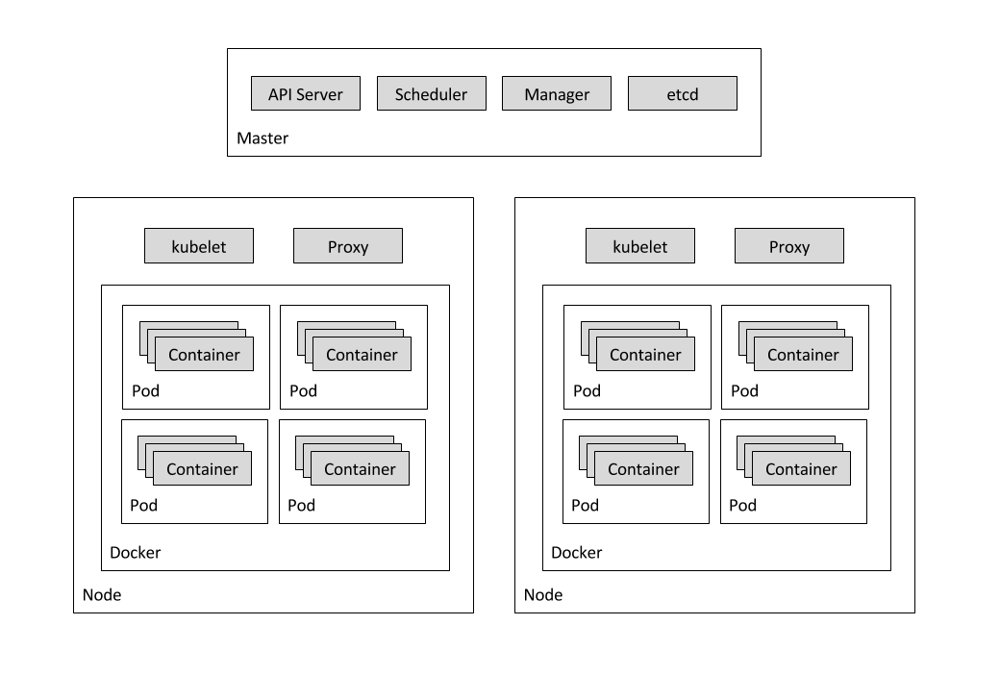
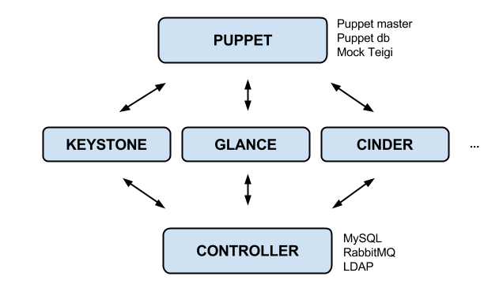

CERN OpenStack Dev
Containers For The Win
Goals
Speed up our own dev (manifests, pkgs, scripts)
Improve testing, integration, validation
Quick scratch and deploy
How
Simplified setup (machine containers, think init)
Self contained (no deps on other setups)
Easy integration with tooling (docker, jenkins, ...)
Non Goals
Upstream code testing
Container orchestration solution
End user solution
Containers

Kubernetes
Cluster is a set of physical or virtual nodes
Node is a physical or virtual machine where pods run Pod is a colocated group of containers (shared IP, ...) Replication controller manage lifecycles of pods Service is a stable name and address for a set of pods (LB) Label: key/value pairs to organize and select objectsKubernetes
Dev Environment
All kubernetes pods + services
DEMO
Continuous Integration
- Submit new pull request (gitlab)
- Jenkins picks it up as a new job
- Job runs contained on single slave (docker latest + puppet run)
- Jenkins comments on PR with result (+ or -1 and logs)
- PR gets updated or merged accordingly after another +1 (human review)
Additional daily job rebuilding from scratch?
Next
Add rally node and tests
Add missing components
(horizon, neutron, nova, ceilometer, kibana/ES)
Kubernetes namespaces (job isolation)
Magnum
The icecream on top...
Not for this use case, but looking forward
No vendor lock
Integration with the rest of OpenStack
Networking? Neutron L3? LanDB?